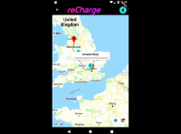
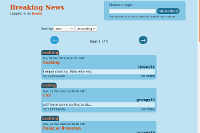
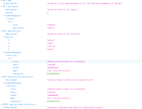

Projects
-
reCharge

reCharge is a mobile app which allows electric vehicle owners to plan their journeys around the stop-offs they'll need to make at charging points. It was built collaboratively with three of my fellow students at the Northcoders bootcamp in Manchester, using Ruby on Rails and Flutter.
-
Nick's Breaking News

A Reddit-style news aggregator built using ReactJS.
-
Nick's Breaking News Back-End

The RESTful back-end for my news aggregator. Built using NodeJS with Express, Axios, Knex and PostgreSQL.